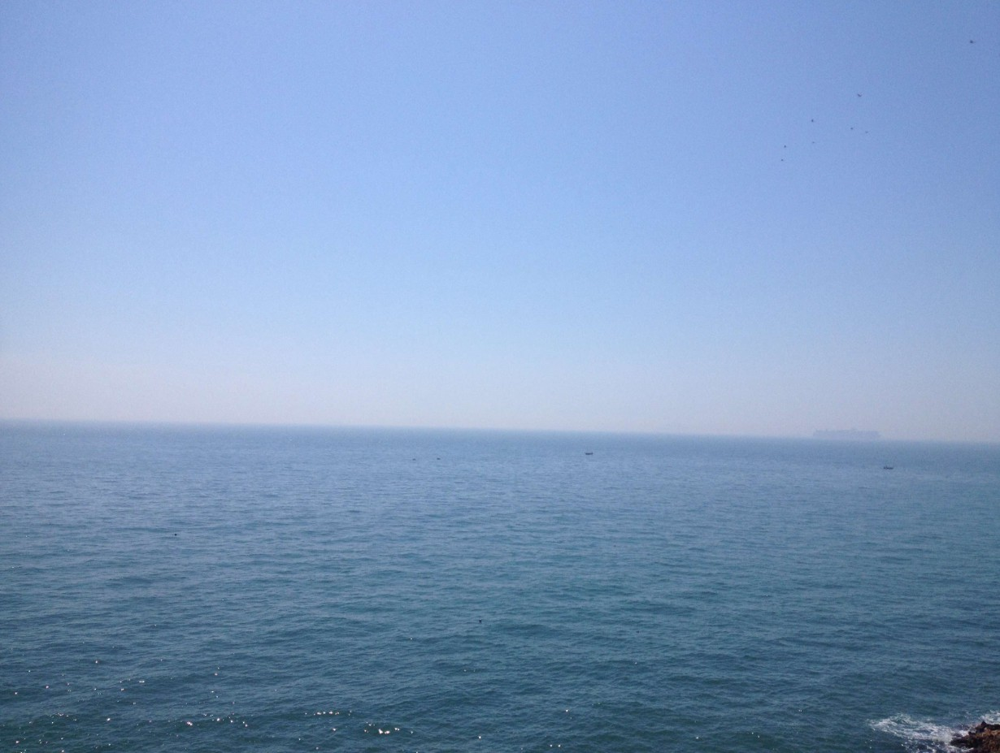
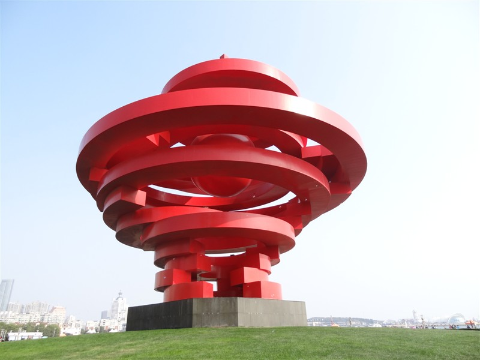
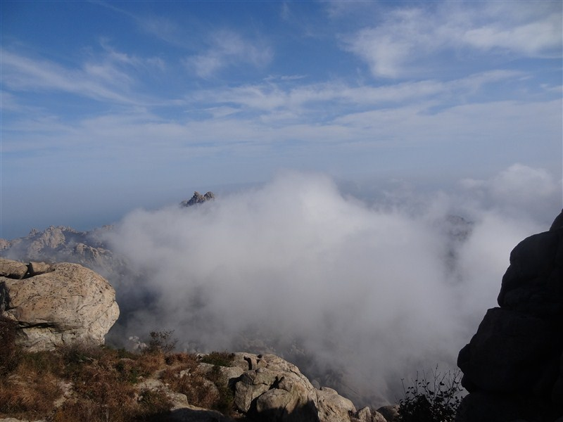
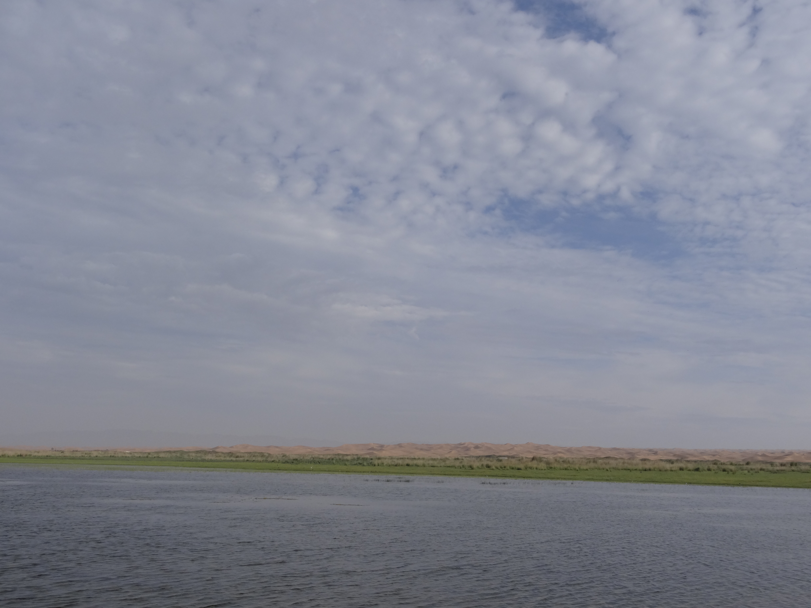
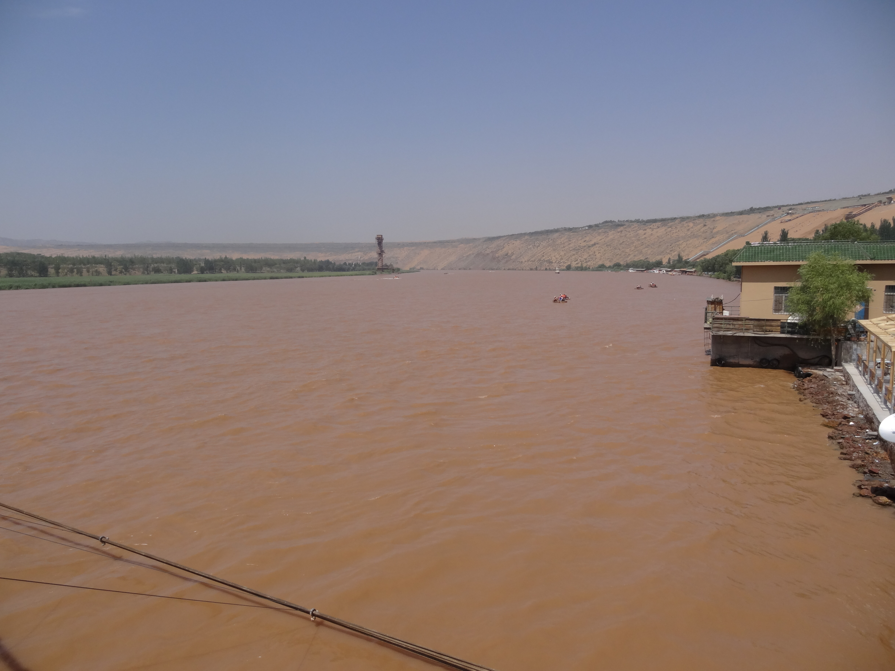

泰山日出
Shoot by vashon on 2019-12-07
拍摄于泰山，暂无说明
泰山山顶
Shoot by vashon on 2019-12-07
拍摄于泰山，暂无说明

泰国大皇宫
Shoot by vashon on 2019-10-05
拍摄于泰国，暂无说明

泰国芭提雅
Shoot by vashon on 2019-10-06
拍摄于泰国，暂无说明

青岛海岸
Shoot by vashon on 2018-05-12
拍摄于青岛，暂无说明

青岛五四广场
Shoot by vashon on 2012-10-05
拍摄于青岛，暂无说明

青岛崂山
Shoot by vashon on 2012-10-14
拍摄于青岛，暂无说明

八大关夕阳
Shoot by vashon on 2014-10-14
拍摄于青岛，暂无说明

宁夏草原
Shoot by vashon on 2015-08-08
拍摄于宁夏，暂无说明

宁夏黄河
Shoot by vashon on 2015-08-08
拍摄于宁夏，暂无说明